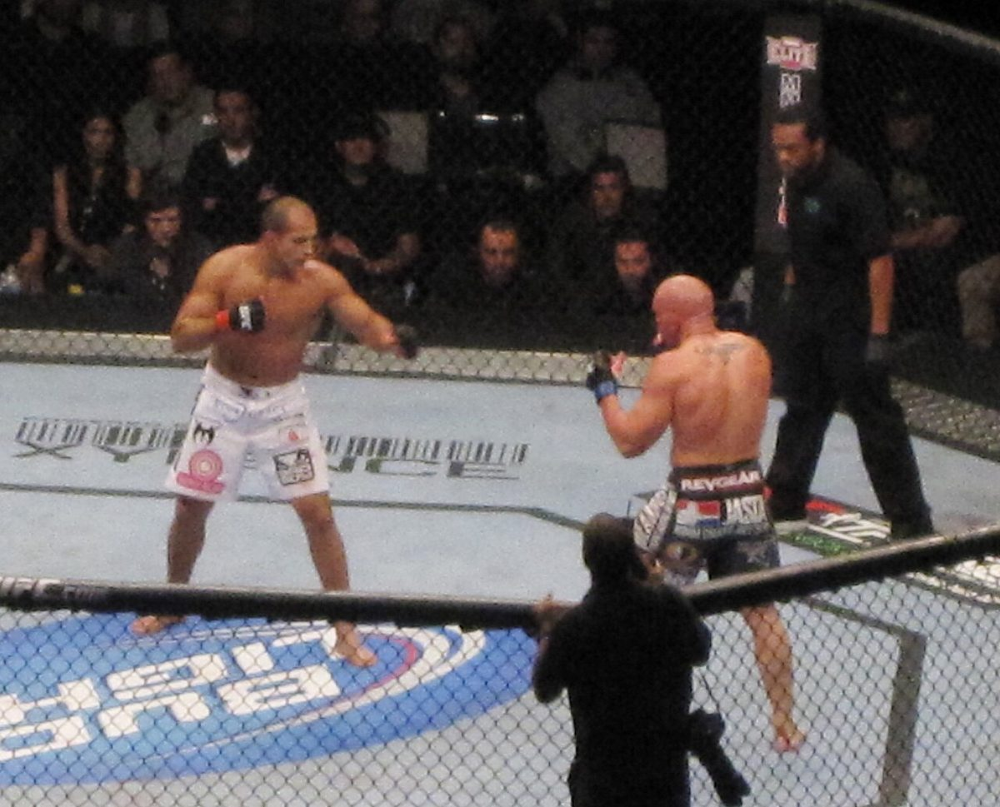

Alexander Volkov Signs a New UFC Contract as Talks on a Title Fight Begin
The 38-year-old Russian heavyweight agreed a multi-fight deal a month after beating Rizvan Kuniev at UFC 333 in Abu Dhabi, his manager said.

What happened
Russian heavyweight Alexander Volkov has signed a new contract with the UFC, his manager Ivan Bannikov told the TASS news agency on 17 November 2026. Bannikov told Match TV that the deal covers several fights and comes on improved terms, and that talks about a title fight for Volkov have already started, Sports.kz reported. The exact number of fights and the financial terms were not disclosed, and no opponent or date for a title fight has been named.
His most recent fight

The new deal comes a month after Volkov's last appearance. At UFC 333 in Abu Dhabi in October, he beat his compatriot Rizvan Kuniev by unanimous decision on the main card.
The career so far
Volkov, 38, has a professional record of 41 wins and 11 losses, Rambler Sport reported, citing TASS. Born in Moscow and nicknamed "Drago", he stands 2.01 metres tall. Before joining the UFC he held the heavyweight titles of Bellator, from 2012 to 2013, and M-1 Global, from 2016.
He made his UFC debut in 2016 with a win over Timothy Johnson. Since then he has fought 20 times in the promotion and won 15 of those bouts, according to Sports.kz.
What happens next
The UFC has not announced Volkov's next fight. The heavyweight title is held by Ciryl Gane, who kept it with a unanimous decision over Josh Hokit at UFC 334 on 14 November.
Volkov has already fought Gane twice. He lost a unanimous decision in June 2021, and a split decision in their rematch at UFC 310 in December 2024. Nineteen of 20 media outlets scored that rematch for Volkov.